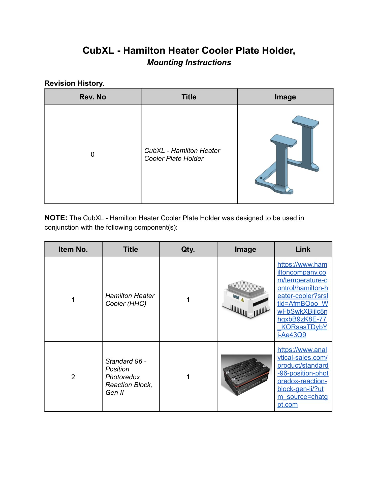
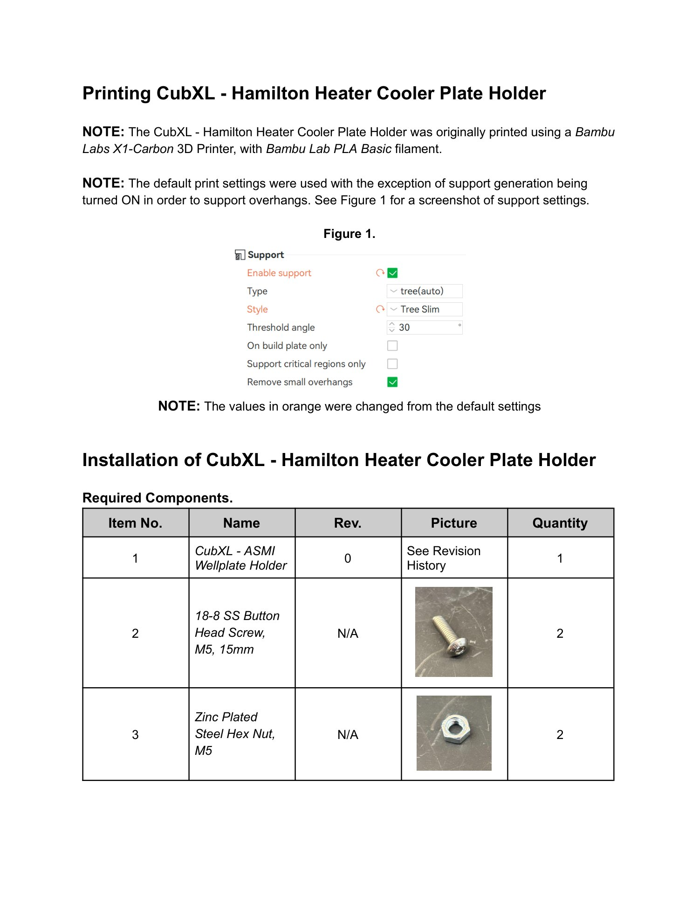
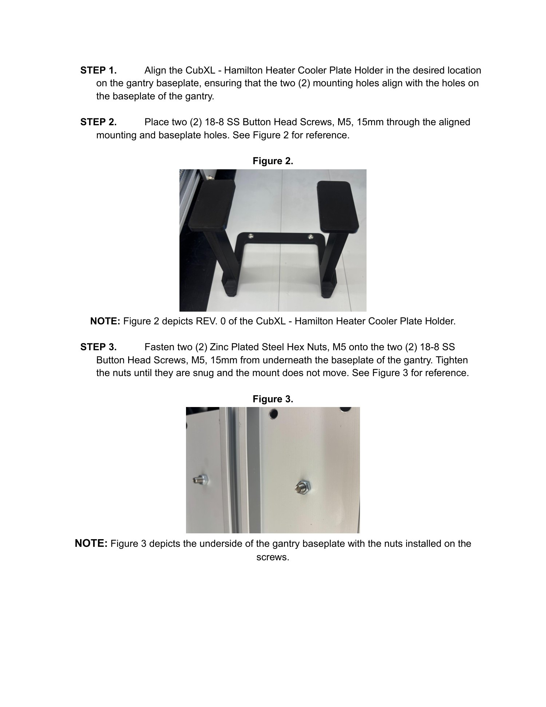

Mounting guide · CubXL
CubXL Hamilton Heater Cooler Plate Holder
Print the Hamilton Heater Cooler plate holder and fasten it through the CubXL gantry baseplate.
Source: CubXL - Hamilton Heater Cooler Plate Holder, Mounting Instructions.
Parts
| No. | Part | Qty. |
|---|---|---|
| 1 | CubXL - Hamilton Heater Cooler Plate Holder, rev. 0 | 1 |
| 2 | 18-8 SS Button Head Screw, M5, 15mm | 2 |
| 3 | Zinc Plated Steel Hex Nut, M5 | 2 |
| 4 | Hamilton Heater Cooler (HHC) | 1 |
| 5 | Standard 96-Position Photoredox Reaction Block, Gen II | 1 |
Print notes
The reference print used a Bambu Labs X1-Carbon 3D Printer with Bambu Lab PLA Basic filament. The source instructs the operator to turn support generation on for overhangs. See the illustrated manual below for the slicer settings and assembly orientation.
Mount the holder
- Align the CubXL Hamilton Heater Cooler Plate Holder in the desired location on the gantry baseplate. Ensure that its two mounting holes align with holes in the gantry baseplate.
- Place two M5 × 15mm button head screws through the aligned holder and baseplate holes.
- From underneath the gantry baseplate, fasten two M5 hex nuts onto the screws. Tighten until snug and the holder does not move.
Illustrated source manual
Read the original assembly figures and parts tables below. These pages were retrieved from KABLab on September 22, 2026. Open the source Google Doc for later changes.
View all 3 illustrated pages


